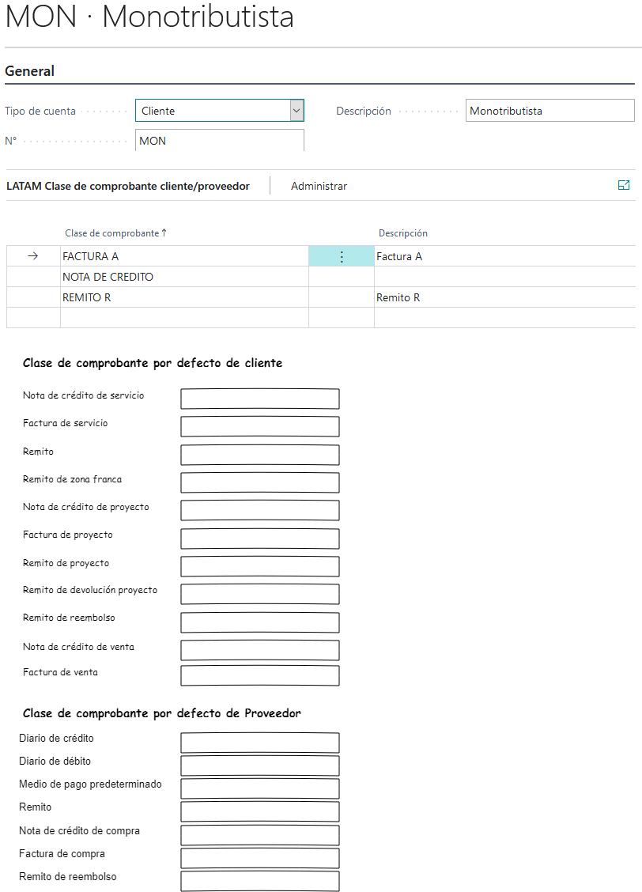

Grupo de tipo de cuenta

Descripción
Maestro de grupo de tipo de cuenta. Crea una tipificación para un tipo de cuenta. Los tipos de cuenta son:
- Cliente
- Proveedor
- banco
- Inventario
- Ledger??
Esta tipificación permite asociar o definir un conjunto de clases de comprobantes, de tal modo que toda cuenta que use esta tipificación tendrá acceso a los comprobantes que tenga este grupo.
Además de esto permite definir comprobantes por defecto para algunos documentos o transacciones. Por ejemplo si se define el comprobante FACTURA A como comprobante por defecto para factura de cliente. Al momento de cargar una factura para un cliente que tenga este grupo, el comprobante FACTURA A debe estar pre cargado en el campo clase de comprobante del formulario Extensión de documento. Este mismo comportamiento aplica para otros documentos y otras entidades que se detallan mas abajo. en la secciones
Sección General

Campos
Tipo de cuenta
Descripción: Especifica a que tipo de cuenta va a tipificar.
- Cliente
- Proveedor
- banco
- Inventario
- Ledger??
un grupo tipo cuenta cuyo tipo cuenta es cliente solo puede ser usado en la extensión de cliente. Uno tipo proveedor solo puede tipificar a proveedores y así sucesivamente.
Tipo:Code
No.
Descripción:
Tipo:Code
Descripción
Descripción:
Tipo:Code
Sección clase de comprobante Cliente/Proveedor

Campos
Clase de comprobante
Descripción: Id de clases de comprobantes
Tipo:Code
Descripción
Descripción: Descripción de clases de comprobantes
Tipo:Text
Sección Clase de comprobante por defecto de cliente
Campos
Nota de crédito de servicio
Descripción: Id de clases de comprobantes que será propuesto como clase de comprobante por defecto al crear una nota de crédito de servicio. En este campo solo se pueden cargar comprobante cuyo tipo clase de comprobante tenga marcado el check Notas de crédito de servicio
Tipo:Code[15]
Factura de servicio
Descripción: Id de clases de comprobantes que será propuesto como clase de comprobante por defecto al crear una factura de servicio. En este campo solo se pueden cargar comprobante cuyo tipo clase de comprobante tenga marcado el check Factura de servicio
Tipo:Code[15]
Remito de zona franca
Descripción: Id de clases de comprobantes que será propuesto como clase de comprobante por defecto al crear un remito de servicio. En este campo solo se pueden cargar comprobante cuyo tipo clase de comprobante tenga marcado el check Remito
Tipo:Code[15]
Remito
Descripción: Id de clases de comprobantes que será propuesto como clase de comprobante por defecto al crear un remito de compra/ventas. En este campo solo se pueden cargar comprobante cuyo tipo clase de comprobante tenga marcado el check Remito
Tipo:Code[15]
Nota de crédito de proyecto
Descripción: Id de clases de comprobantes que será propuesto como clase de comprobante por defecto al crear una nota de crédito de proyecto. En este campo solo se pueden cargar comprobante cuyo tipo clase de comprobante tenga marcado el check nota de crédito de proyecto
Tipo:Code[15]
Factura de proyecto
Descripción: Id de clases de comprobantes que será propuesto como clase de comprobante por defecto al crear una factura de proyecto. En este campo solo se pueden cargar comprobante cuyo tipo clase de comprobante tenga marcado el check Factura de proyecto
Tipo:Code[15]
Remito de proyecto
Descripción: Id de clases de comprobantes que será propuesto como clase de comprobante por defecto al crear un remito de proyecto. En este campo solo se pueden cargar comprobante cuyo tipo clase de comprobante tenga marcado el check Remito de proyecto
Tipo:Code[15]
Remito de devolución proyecto
Descripción: Id de clases de comprobantes que será propuesto como clase de comprobante por defecto al crear una devolución de proyecto. En este campo solo se pueden cargar comprobante cuyo tipo clase de comprobante tenga marcado el check Remito de devolución proyecto
Tipo:Code[15]
Remito de reembolso
Descripción: Id de clases de comprobantes que será propuesto como clase de comprobante por defecto al crear una entrada en diario de crédito. En este campo solo se pueden cargar comprobante cuyo tipo clase de comprobante tenga marcado el check Remito de devolución Tipo:Code[15]
Nota de crédito de venta
Descripción: Id de clases de comprobantes que será propuesto como clase de comprobante por defecto al crear una nota de crédito de ventas. En este campo solo se pueden cargar comprobante cuyo tipo clase de comprobante tenga marcado el check Nota de crédito de venta
Tipo:Code[15]
Factura de venta
Descripción: Id de clases de comprobantes que será propuesto como clase de comprobante por defecto al crear una factura de ventas. En este campo solo se pueden cargar comprobante cuyo tipo clase de comprobante tenga marcado el check Factura de venta
Tipo:Code[15]
Sección Clase de comprobante por defecto de proveedor
Campos
Diario de crédito
Descripción: Id de clases de comprobantes que será propuesto como clase de comprobante por defecto al crear una entrada en el diario del proveedor al crédito. En este campo solo se pueden cargar comprobante cuyo tipo clase de comprobante tenga marcado el check Línea de crédito de diario de proveedor
Tipo:Code[15]
Diario de débito
Descripción: Id de clases de comprobantes que será propuesto como clase de comprobante por defecto al crear una entrada en el diario del proveedor al débito. En este campo solo se pueden cargar comprobante cuyo tipo clase de comprobante tenga marcado el check Línea de débito de diario de proveedor
Tipo:Code[15]
Medio de pago predeterminado
Descripción: Id de clases de comprobantes que será propuesto como clase de comprobante por defecto al crear un medio de cobro pago para un proveedor. En este campo solo se pueden cargar comprobante que tenga marcado el Medio de cobro/pago
Tipo:Code[15]
Remito
Descripción: Id de clases de comprobantes que será propuesto como clase de comprobante por defecto al crear un remito de compras. En este campo solo se pueden cargar comprobante cuyo tipo clase de comprobante tenga marcado el check Remito
Tipo:Code[15]
Nota de crédito de compra
Descripción: Id de clases de comprobantes que será propuesto como clase de comprobante por defecto al crear una nota de crédito de compras. En este campo solo se pueden cargar comprobante cuyo tipo clase de comprobante tenga marcado el check Nota de crédito de compra
Tipo:Code[15]
Factura de compra
Descripción: Id de clases de comprobantes que será propuesto como clase de comprobante por defecto al crear una factura de compras. En este campo solo se pueden cargar comprobante cuyo tipo clase de comprobante tenga marcado el check Factura compra
Tipo:Code[15]
Remito de reembolso
Descripción: Id de clases de comprobantes que será propuesto como clase de comprobante por defecto al crear una entrada en diario de crédito. En este campo solo se pueden cargar comprobante cuyo tipo clase de comprobante tenga marcado el check Remito de devolución
Tipo:Code[15]